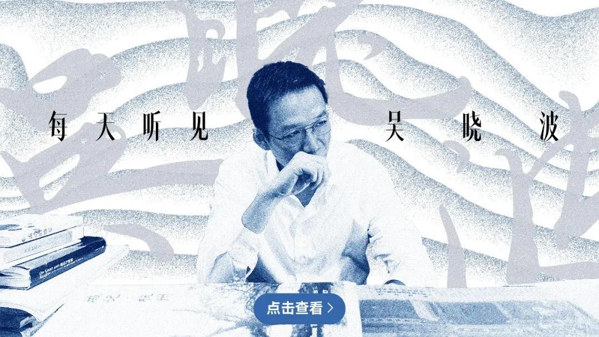
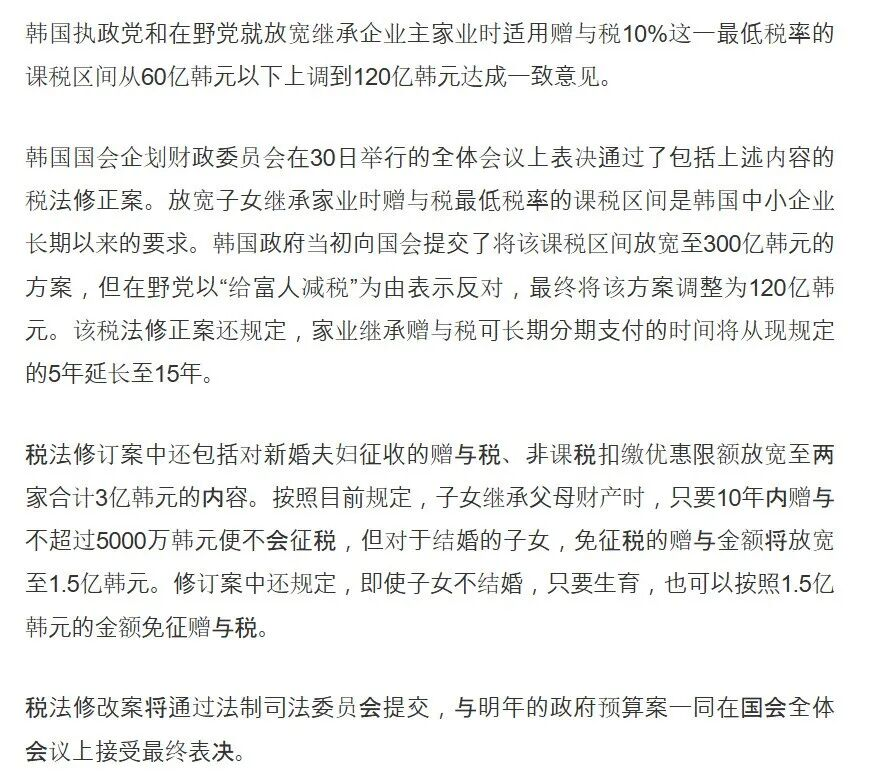
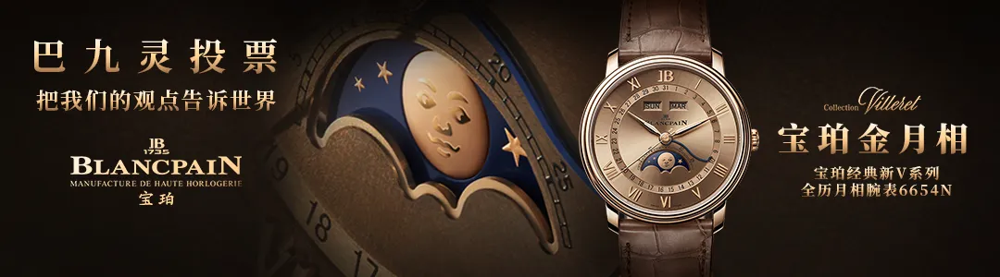
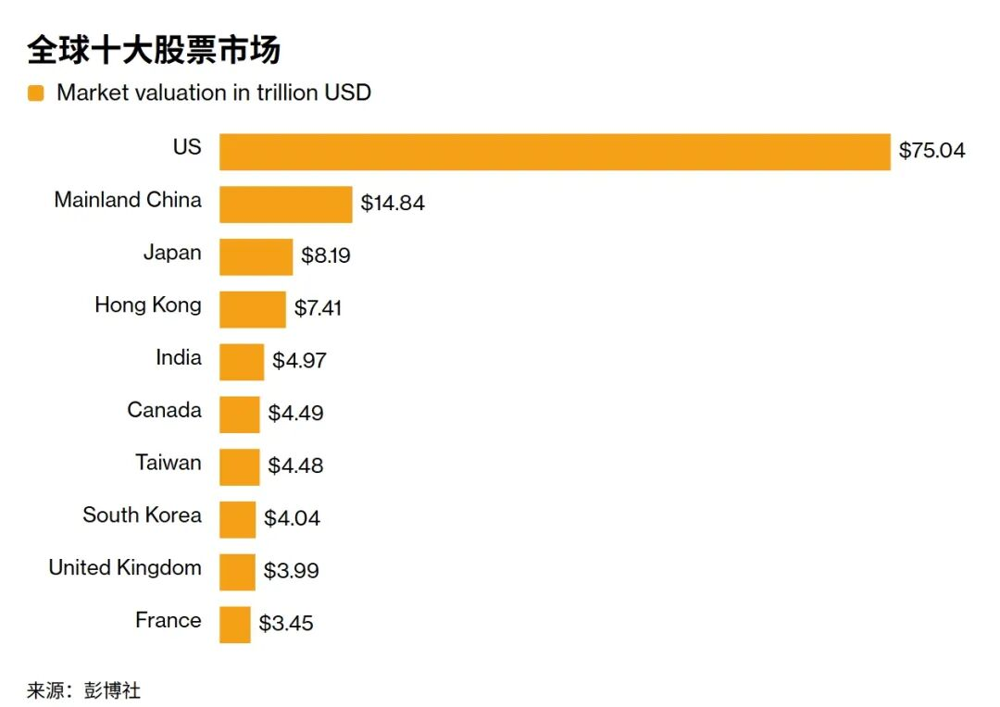
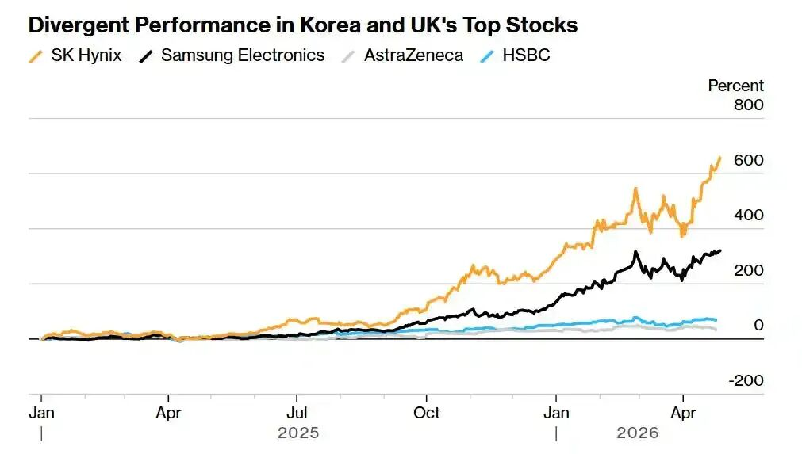
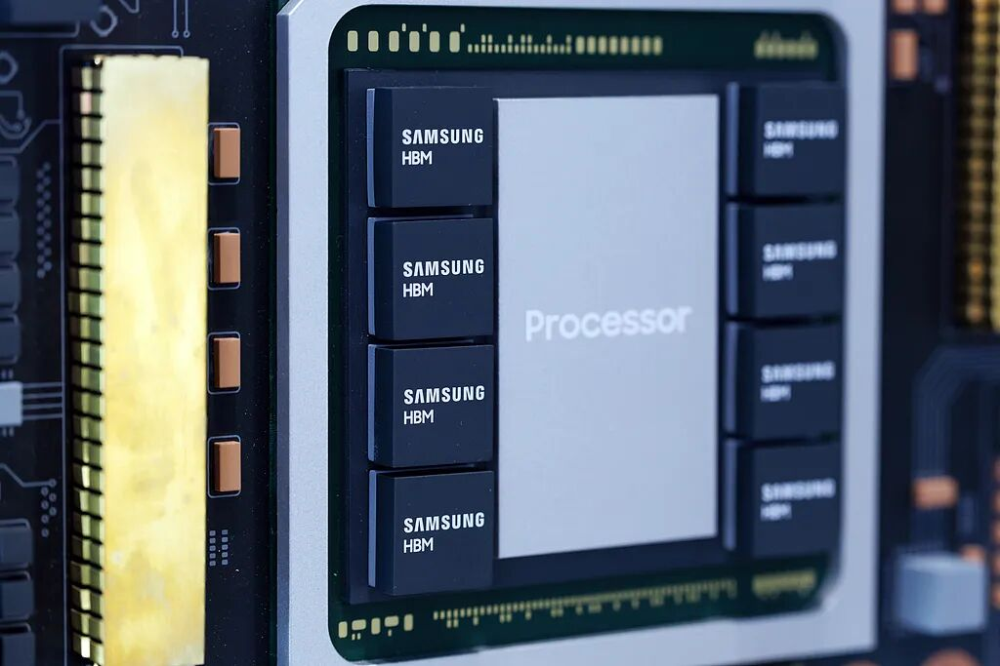
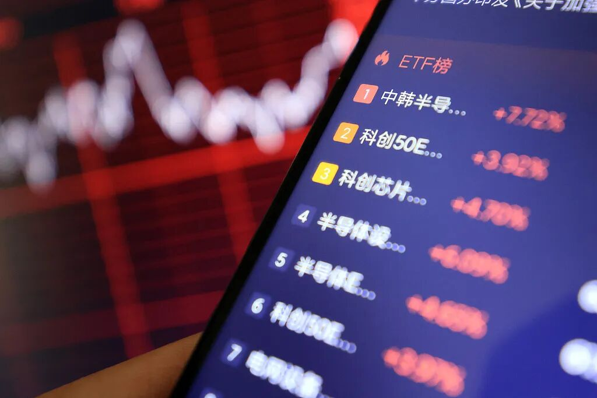
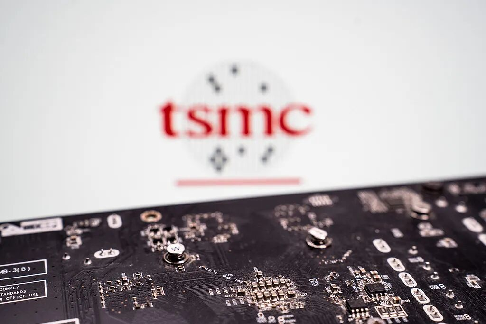

📈 魔幻的韩国股市，父母给婴儿开户买股票
Korea’s equity boom and baby brokerage accounts


“全球资本正从美国的‘金融资产asset[ˈæˌsɛt] n. 资产， 财产；优点； 有用的东西’向非美地区的‘实物资产’进行大规模再平衡。”
文 / 巴九灵（微信公众号：吴晓波频道）
在韩国，一种新奇的“婴儿投资”正在年轻父母之间流行epidemic[ˌɛpɪˈdɛmɪk] n. 传染病；流行病；风尚等的流行起来。
父母早在孕晚期便已开始选定assign[əˈsaɪn] v. 派给，分配；选定，指定(时间、地点等)投资标的，待婴儿呱呱坠地那一刻，就利用手机远程开户，下单买入。
于是accordingly[əˈkɔrdɪŋli] adv. 因此，于是；相应地；照著，韩国宝宝尚在襁褓之中，就已成为韩国知名企业SK海力士与三星电子的“婴儿股东”。
韩国父母的神操作，一方面angle[ˈæŋgəl] n. 角度，角，方面，与韩国政府的政策有关。

给婴儿定投半导体龙头？
根据韩国现行的《继承税及赠与税法》：19岁以下未成年minority[məˈnɔrəti] n. 少数民族；少数派；未成年子女，每10年免税额度为2000万韩元。成年子女每10年免税额度提高enhance[ɛnˈhæns] v. 提高；加强；增加至5000万韩元。

图源：《中央日报》中文网
利用上述政策，很多韩国家长从孩子出生就开始进行资产转移：孩子一出生就给他开设证券账户并且转入2000万韩元，等到10岁再转2000万韩元，20岁和30岁成年后分别转入5000万韩元，这样30岁就可以从父母处合法免税地获得acquire[əkˈwaɪər] v. 获得；取得；学到；捕获1.4亿韩元，约合10万美元的资产。
韩国家长之所以通过为孩子开设股票或ETF账户的形式而非现金，是因为赠与accord[əˈkɔrd] vt. 授予， 赠与税是按赠与时的价值计税，后续资产不再额外征收，因此早早给自己孩子买入ETF，就可以免除最高50%的韩国继承税。
根据韩国证券存管机构公布的数据，截至2025年底，韩国未成年minority[məˈnɔrəti] n. 少数民族；少数派；未成年股东的数量为343694人，占总股东数的8.19%，持股总价值约为2.68万亿韩元。
2025年12月，韩国未成年人infant[ˈɪnfənt] n. 婴儿；幼儿；未成年人单月开户数量为34590户，是2025年1月份的近三倍。持有证券的规模表明，通过以儿童名义开立的账户进行继承和赠与accord[əˈkɔrd] vt. 授予， 赠与的交易相当频繁。
当我们把每年亲友给孩子的红包攒起来做教育基金的时候，韩国的“孩子”已经开始定投半导体semiconductor[ˌsɛmɪkənˈdəktər] n. 半导体ETF基金了。
另一方面angle[ˈæŋgəl] n. 角度，角，方面，韩国父母们着急忙慌地“从娃娃抓起”，也和韩国当前的超级牛市脱不开干系。

这一年来，韩国股市的municipal[mjuˈnɪsəpəl] adj. 市政府的，市的，市办的排名就像坐上了火箭。
截至4月30日，韩国综合指数报收6598.87点，年涨幅高达56.59%，与此同时，韩国KOSPI指数在4月28日盘中创下历史新高，将老牌资本主义capitalism[ˈkæpɪtəˌlɪzəm] n. 资本主义国家英国，往后压了一个身位，位列全球第八。

韩国股市暴涨的原因，在于两家世界级的半导体semiconductor[ˌsɛmɪkənˈdəktər] n. 半导体巨头：SK海力士和三星电子。
韩国KOSPI指数虽然有超过800只成分股，但40%以上的市值集中在三星电子amplifier[ˈæmpləˌfaɪər] n. [电子] 放大器，扩大器；扩音器和SK海力士这两家存储芯片巨头上。
因此，与其说韩国股市表现出色，不如说是这两家半导体semiconductor[ˌsɛmɪkənˈdəktər] n. 半导体巨头的股价表现强势。
截至目前presently[ˈprɛzəntli] adv. 一会儿,不久；现在,目前，SK海力士今年股价已上涨97.54%，一年以来累计涨幅624.51%；三星电子amplifier[ˈæmpləˌfaɪər] n. [电子] 放大器，扩大器；扩音器今年涨幅为83.90%，一年以来累计涨幅297.3%。

AI行业的快速迭代是两巨头股价起飞的主要助推器。
当前，AI大模型的参数已经进入万亿级别，越庞大的enormous[ɪˈnɔrmɪs] adj. 庞大的，巨大的；凶暴的，极恶的参数，意味着需要越多性能强大的闪存芯片用于加载大模型，业内一般将其称为“HBM高带宽内存”。
同时，在AI推理场景下，大规模用户请求的上下文长度不断增长，对高吞吐、低延迟存储系统的需求远超过往，因而还需要更多性能强大的formidable[ˌfɔrˈmɪdəbəl] adj. 强大的;令人敬畏的;可怕的;艰难的“NAND闪存”用来存储数据。
而韩国股市，同时meantime[ˈminˌtaɪm] adv. 同时；其间踩中了这两大风口。
SK海力士是全球HBM（高带宽bandwidth[ˈbændwɪdθ] n. 带宽内存）的绝对领导者，截止2025年第二季度，SK海力士在HBM市场的份额高达62%。
再看三星电子，财报显示，三星电子已经启动面向英伟达的HBM4量产产品销售，下一代HBM产品也在研发之中，产能有望继续追赶SK海力士，市场份额或达到accomplish[əˈkɑmplɪʃ] v. 完成；实现；达到28%左右。
除此之外，三星电子amplifier[ˈæmpləˌfaɪər] n. [电子] 放大器，扩大器；扩音器还拥有储存业务。同样是由于AI行业的庞大需求，三星电子amplifier[ˈæmpləˌfaɪər] n. [电子] 放大器，扩大器；扩音器2026年一季度储存业务销售额环比增长翻倍，同比增长也高达292%，创下有史以来单季度销售记录。整体而言，公司一季度合并coalition[ˌkoʊəˈlɪʃən] n. 联合；结合，合并营收897亿美元，环比增长43%；营业利润388.3亿美元，同比暴增756%，创下历史新高。

用于人工智能系统的systematic[ˌsɪstəˈmætɪk] adj. (al)系统的,有组织的高带宽存储芯片模型
当疯牛遇上疯狂的投资者
除了半导体厂商赚得盆满钵满，韩国资本市场的暴涨，也离不开韩国投资者的全情投入，给婴儿买半导体只不过mere[mɪr] adj. 仅仅,只不过是其中一个神操作。
在中国，投资者一般全仓“All in”已经算是比较compare[kəmˈpɛr] v. 比较；与…相比偏激的投资风格，但是在韩国投资者，买股票，上杠杆才是投资常态。
之前韩国投资者喜欢投资包括英伟达、特斯拉等“美股巨头”，但现在，他们更愿意转向半导体semiconductor[ˌsɛmɪkənˈdəktər] n. 半导体基金，特别是那些带杠杆的ETF产品。

韩国证券存管机构4月6日的数据显示，3月中东战争爆发以后，追踪半导体semiconductor[ˌsɛmɪkənˈdəktər] n. 半导体指数、3倍杠杆率的ETF SOXL吸引了12.542亿美元的资金，位居净买入金额榜首；紧随其后的是3倍做多纳斯达克的Nasdaq 3x(TQQQ)和3倍做多韩国市场的3x(KORU)等杠杆lever[ˈlɛvər] n. 杆,杠杆；手段,途径,工具型产品。
韩国国际金融中心的研究员申瑟薇在报告中指出：“韩国投资者以杠杆ETF等高风险资产为核心的激进投资趋势有所加剧，用于风险对冲的固定anchor[ˈæŋkər] v. 抛锚；使固定；主持节目收益资产比例有所上升。”
除了杠杆炒股之外，韩国投资invest[ɪnˈvest] v. 投资；覆盖；耗费；授予；包围者还喜欢“借钱炒股”。
韩联社4月22日报道，韩国股市信用交易融资余额，也就是namely[ˈneɪmli] adv. 即,也就是“投资者借钱炒股”的金额，首次突破34万亿韩元（230.84亿美元）。由于股市杠杆投资热情明显升温，韩国多家券商已紧急采取adopt[əˈdɑpt] v. 采取；接受；收养；正式通过措施，上调保证金比例并暂停部分杠杆交易，试图抑制市场非理性扩张。
尽管政策层面不断降温，但韩国投资者借钱炒股的热情enthusiasm[ɪnˈθuziˌæzəm] n. 热心，热忱，热情根本拦不住。就在券商采取措施的第二天，韩国信用交易融资余额续创新高，截至4月28日，信用交易余额已达到accomplish[əˈkɑmplɪʃ] v. 完成；实现；达到35.69万亿韩元（约242.31亿美元）。
在韩国投资者看来，现在正是史无前例的半导体semiconductor[ˌsɛmɪkənˈdəktər] n. 半导体超级大牛市，贷的越多，买的越多，赚得越多。
全球资本拥抱“HALO”
与韩国股市一样，借由AI东风，中国台湾的股市最近表现behave[bɪˈheɪv] v. 表现；（机器等）运转；举止端正；（事物）起某种作用也不俗。
在韩国超过exceed[ɪkˈsid] v. 超过,胜过；越出 (限制、规定)英国前，中国台湾的股市市值，就先超过英国，跻身全球第七大资本市场。
与韩国股市的双巨头相比beside[ˌbiˈsaɪd] prep. 在...旁边，在...附近；和...相比，台湾股市由台积电挑大梁。
4月27日周一，台积电股价触及2330新台币大关，创下历史新高。截至5月1日，台积电今年涨幅32.21%，最近一年股价涨幅高达140.80%，市值约合1.75万亿美元，相较之下，台湾股市的municipal[mjuˈnɪsəpəl] adj. 市政府的，市的，市办的总市值仅有4.47万亿美元。

台积电制造的半导体semiconductor[ˌsɛmɪkənˈdəktər] n. 半导体芯片
台积电在2025年年报中强调accent[ˈækˌsɛnt] n. 口音；重音；强调；特点；重音符号：AI市场持续快速发展，尤其是大型语言模型(LLM)的兴起极大地推动了算力需求的增长。企业级AI和主权AI应用也在同步扩展，成为支撑半导体semiconductor[ˌsɛmɪkənˈdəktər] n. 半导体行业长期需求的重要动力。
当前，全球几乎所有AI计算的核心芯片，无论是GPU还是基于AI的专用芯片，都必须经由台积电的先进制程，才能实现accomplish[əˈkɑmplɪʃ] v. 完成；实现；达到物理存在。
而中国台湾和韩国的股市表现强势的背后，在于它们都踩中了当下最热的市场风口——“HALO资产asset[ˈæˌsɛt] n. 资产， 财产；优点； 有用的东西”。
2026年2月份，高盛基于全球人工智能浪潮和地缘政治的不确定性，提出要寻找那些物理上难以替代、不会被AI技术轻易颠覆的硬资产，即“HALO”，其中典型的领域，是能源与公用事业、基础资源与材料、交通基础设施infrastructure[ˈɪnfrəstrʌktʃə] n. 基础设施；公共建设；下部构造和高端制造设备。
而韩国和台湾股市，坐拥了既能代表ambassador[æmˈbæsədər] n. 大使；特使，(派驻国际组织的)代表“HALO资产”，同时又扮演AI浪潮下“卖铲人”角色的高端芯片制造产业。
并且，随着美伊冲突的爆发，“HALO”还成为了对冲全球系统性风险的工具——越来越多的资本试图规避过去以“美国中心化”的系统性风险，寻找更具有“稀缺性”的资产asset[ˈæˌsɛt] n. 资产， 财产；优点； 有用的东西。
管理administer[ədˈmɪnɪstər] v. 管理；执行；给予720亿美元资产的首鹰投资基金经理朱利安・阿尔贝蒂尼曾指出：“能源安全、国防、供应链韧性已成为各国战略自主的核心，这推动了全球资本从美国的‘金融资产’向非美地区的‘实物资产’进行大规模再平衡。”
简单来说，他认为美国主导全球、靠金融收割全世界的universal[ˌjunəˈvərsəl] adj. 全体的,宇宙的,世界的；普遍的，通用的时代，就要结束了。现在全世界各个国家，最核心的生存目标，已经不是“跟着美国搞金融赚快钱”，而是三件关乎国家存亡的大事：能源安全、国防安全、供应furnish[ˈfərnɪʃ] v. 供应,提供；装备,布置链安全。
寻找“HALO”资产asset[ˈæˌsɛt] n. 资产， 财产；优点； 有用的东西的风也刮到了A股市场。
中金公司研究部宏观分析analyze[ˈænəˌlaɪz] vt. 分析； 分解师认为：“HALO交易”是全球资金在旧秩序松动后寻找新锚点的交易热潮，而中国资产成为安全资产，则是这一热潮在中国市场的具象化与深化。
中国银河证券首席策略分析analyze[ˈænəˌlaɪz] vt. 分析； 分解师杨超认为：全球资本在高不确定性环境下对“确定性与稀缺性”的再定价，让中国资产被赋予“安全资产”属性。
值得一提的是，中国资产的“安全属性”更多源于宏观体系层面，定价基础在于经济体的产业完整性、政策空间与内需韧性，是对“系统稳定性与增长确定ascertain[ˌæsərˈteɪn] v. 确定，查明，弄清性”的重估。
不过，无论是押注AI浪潮还是积极拥抱“HALO”，市场疯狂的背后，也有重量级人物保持conservation[ˌkɑnsərˈveɪʃən] n. 保存，保持；保护了理性和清醒。
退居幕后的股神巴菲特，在前日伯克希尔股东大会间隙就对媒体坦言：“当前的投资环境并不理想”，真正的authentic[əˈθɛnɪk] adj. 真正的，真实的；可信的买入时机要等到市场恐慌至“无人接听电话”之时。
最新财报显示exhibit[ɪgˈzɪbɪt] v. 展览；显示；提出（证据等），伯克希尔一季度，手握创纪录的3970亿美元现金储备。
伯克希尔新掌门人阿贝尔也强调accent[ˈækˌsɛnt] n. 口音；重音；强调；特点；重音符号：“我们不会为了AI而AI，AI必须为业务创造实际价值。”
他再次强调accent[ˈækˌsɛnt] n. 口音；重音；强调；特点；重音符号了伯克希尔的五大基石：现金与国债安全垫，财务独立，灵活配置，税务高效，杜绝傲慢、官僚和自满。
或许有投资者认为deem[dim] v. 认为，视作；相信，全球投资者都在拥抱“HALO”和AI，而巴菲特和他的追随者已经老了。
但投资大师霍华德·马克斯也曾说过一句至理名言wisdom[ˈwɪzdəm] n. 智慧，才智；明智；学识；至理名言“在乐观顶峰买入好资产往往意味着灾难。”
因此，在追捧“HALO”的路上，保持一丝冷静，也许才是这场所谓的稀缺性盛宴里，最稀有的scarce[skɛrs] adj. 缺乏的，不足的；稀有的品质。